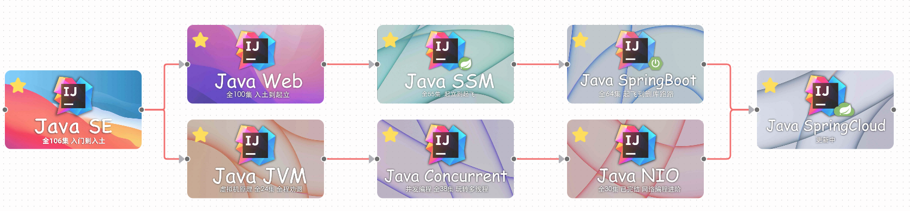
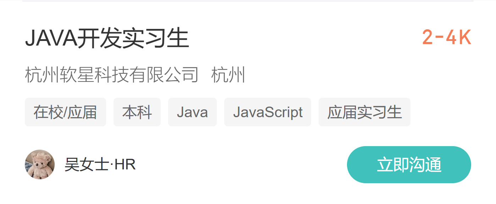
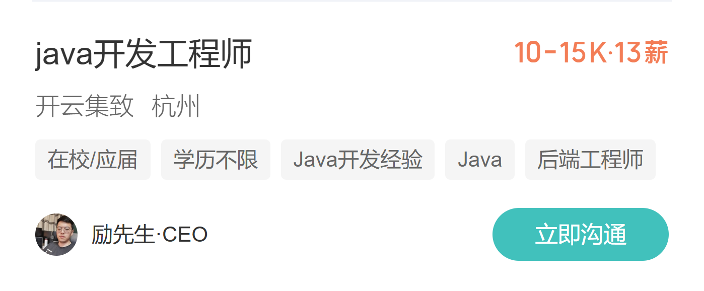
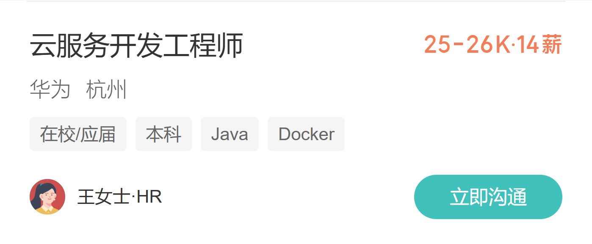
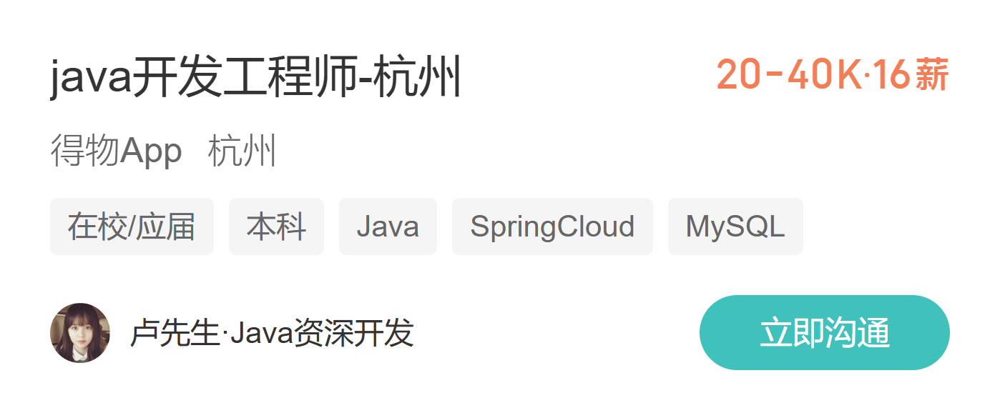

欢迎来到 2025-2026-1 学期
面向对象程序设计（Java）
让我们一起开启构建复杂软件世界的奇妙旅程 为什么要学习面向对象 (OOP)？
想象一下用乐高积木搭建一座复杂的城堡。面向对象编程就像是给你一套标准化的积木（对象），而不是让你从揉泥巴开始。它是一种组织和构建代码的强大思想。
- 封装 (Encapsulation): 就像汽车的仪表盘，你只需操作方向盘和油门，无需关心引擎内部复杂的运作。OOP将复杂功能隐藏起来，只提供简单的接口。
- 继承 (Inheritance): 就像生物的遗传，子类可以自动拥有父类的所有特征和能力，并能发展出自己的新特性。这极大地促进了代码重用。
- 多态 (Polymorphism): 同样是“发出声音”的命令，猫会“喵喵叫”，狗会“汪汪叫”。多态允许不同对象对同一消息做出不同的响应，增加了代码的灵活性。
掌握OOP，你将能编写出更清晰、更易于维护和扩展的复杂软件系统。
Java 技术栈：从入门到企业级
Java 不仅仅是一门语言，更是一个庞大、成熟的生态系统。掌握它，你将拥有构建大型应用的“瑞士军刀”。
- 核心基础 (Java SE): 语言的基石，包括JVM、集合框架和并发工具。这是内功心法。
- 构建工具 (Maven/Gradle): 项目的“管家”，自动管理项目所需的各种第三方库（依赖）。
- Web框架 (Spring Boot): 构建Web应用的“脚手架”，让你无需从零开始，快速搭建健壮的后端服务。
- ORM框架 (MyBatis/Hibernate): Java对象与数据库之间的“翻译官”，让你能用操作对象的方式来操作数据。
- 微服务架构 (Spring Cloud): 将巨型应用拆分为一组小型、独立的服务，易于开发、部署和扩展。
- 数据库 (MySQL/PostgreSQL): 存储和管理应用数据的“仓库”。
Java 职业发展路线：一条宽广的道路
Java开发是IT行业最稳定、最核心的岗位之一，为你提供了清晰的成长路径。
- 初级开发工程师: 你的起点。专注于实现具体功能、修复Bug，在实践中巩固基础，快速成长。
- 高级开发工程师: 团队的中坚力量。能够独立设计和开发复杂模块，解决技术难题，并开始指导新人。
- 技术专家/架构师: 系统的“总设计师”。负责项目的技术选型、架构设计和性能优化，为团队指明技术方向。
- 技术/项目经理: 从“做事”到“管人理事”。转向管理岗位，带领团队实现业务目标，对项目成功负责。
无论你选择哪条路，持续学习和实践都是通往成功的唯一途径。




课程分数分布 (总分 100)
本课程的评分体系旨在全面评估你的理论知识、实践能力和学习态度。每一部分都至关重要。
- 平时成绩 (25%): 衡量你的出勤和课堂参与度。
- 实验作业 (25%): 检验你动手解决问题的能力。
- 期末考试 (50%): 综合考察你对整个课程知识体系的掌握。
平时成绩 (占总分25%)
规律的参与是成功的一半。这部分旨在鼓励你跟上课程的节奏。
- 课堂点到 (占平时成绩的40%):
- 共计 10 次，随机进行。按时到课是尊重知识的体现。
- 随堂测试 (占平时成绩的60%):
- 共计 10 次，旨在快速检验你对核心概念的理解。
- 测试期间不允许使用手机与网络，请依靠自己的大脑。
实验作业 (占总分25%)
编程是一门手艺活。只有通过不断的实践，才能将知识转化为真正的技能。
- 小作业 (占实验分40%):
- 共 5 次，要求提交规范的实验报告，锻炼你的文档撰写和问题总结能力。
- 大作业 (占实验分60%):
- 这是你综合运用所学知识的舞台，鼓励团队合作 (2-3 人/组)。
- 评分将给予整个小组，而组内成员需根据贡献，通过
(小组总分 * 人数)的总额度进行协商分配。这考验的不仅是技术，还有协作与沟通。
期末闭卷考试 (占总分50%)
这是对你整个学期学习成果的最终检验。考试形式为线下纸质闭卷，全面覆盖课程内容。
- 选择题 (30分): 考察你对关键概念和知识点的精确理解。
- 填空题 (20分): 检验你对核心术语和语法细节的记忆。
- 编程题 (50分): 评估你分析问题、设计算法并用代码实现解决方案的综合能力。
总成绩计算示例
假设一位同学的各项成绩如下，那么他的总成绩计算方式为：
| 考核大项 | 子项目 | 权重 | 你的得分 | 加权分数 |
|---|---|---|---|---|
| 平时成绩 (25%) | 课堂点到 (40%) | 25% * 40% = 10% | 95 | 95 * 10% = 9.5 |
| 随堂测试 (60%) | 25% * 60% = 15% | 85 | 85 * 15% = 12.75 | |
| 实验作业 (25%) | 小作业 (40%) | 25% * 40% = 10% | 90 | 90 * 10% = 9 |
| 大作业 (60%) | 25% * 60% = 15% | 95 | 95 * 15% = 14.25 | |
| 期末考试 (50%) | - | 50% | 85 | 85 * 50% = 42.5 |
| 总成绩 | 9.5 + 12.75 + 9 + 14.25 + 42.5 = 88 | |||
最终，这位同学的总成绩为 87.5 分。
课程挑战与建议
面向对象编程是一门需要投入大量时间和精力的课程(挂科率至少25%)。这里有一些重要提醒：
- 课程难度: 本课程涉及较多抽象概念，需要良好的逻辑思维能力。
- 时间投入: 建议每周至少投入8-10小时进行课后练习和复习。
- 及时求助: 遇到困难时，请善用搜索引擎，及时反馈问题。
- 坚持到底: 编程能力是循序渐进的，保持耐心和持续学习的态度很重要。
选择这门课意味着你准备好迎接挑战。相信通过你的努力，一定能收获知识与成长。
1 / X